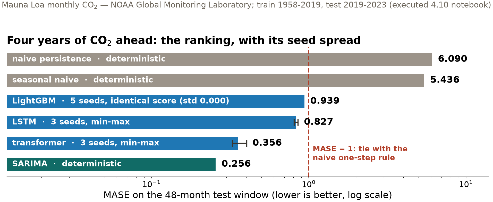
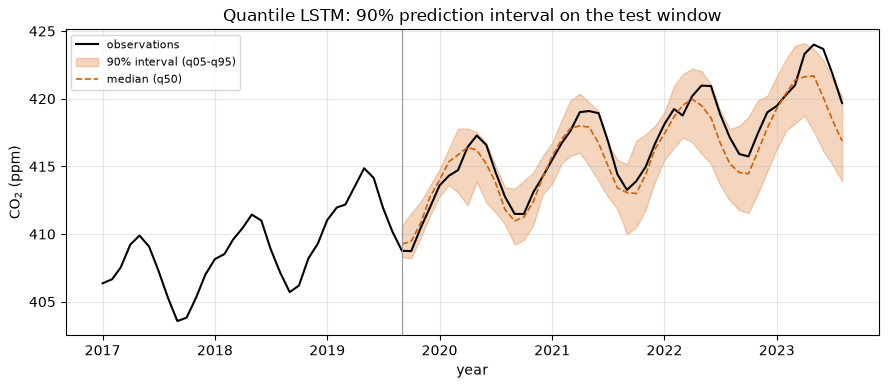
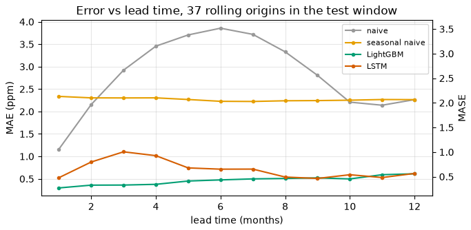
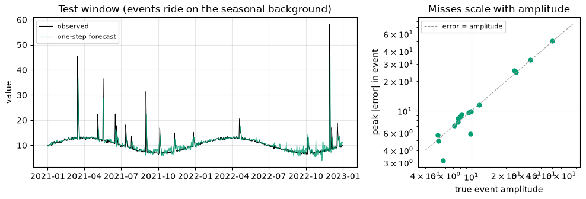

Session 26 · Wed Dec 2 · Book section 4.10
🔮
Every forecast competes with a one-line rule: tomorrow equals today.
When does a trained model actually beat it — at which lead time, on which samples, by how much?
Reading: 4.10 Time series forecasting · Forecasting leaderboard opens today
📖 The metric playbook: why MAPE misleads and where MASE comes from — the scale-free score our leaderboard uses.
Hyndman, R. J., & Koehler, A. B. (2006). Another look at measures of forecast accuracy. International Journal of Forecasting, 22(4), 679–688.
✗ The uncomfortable benchmark: popular ML forecasters ranked below classical statistical baselines across large series collections — complexity without baseline discipline.
Makridakis, S., Spiliotis, E., & Assimakopoulos, V. (2018). Statistical and machine learning forecasting methods: Concerns and ways forward. PLOS ONE, 13(3), e0194889.
✓ The verification creed: maximize sharpness subject to calibration — the sentence behind today’s coverage and CRPS checks.
Gneiting, T., Balabdaoui, F., & Raftery, A. E. (2007). Probabilistic forecasts, calibration and sharpness. Journal of the Royal Statistical Society B, 69(2), 243–268.
✓ ML forecasting done right: judged on the atmosphere’s own verification suite, lead time by lead time, and it beat the operational model.
Lam, R., et al. (2023). Learning skillful medium-range global weather forecasting. Science, 382, 1416–1421.
Forty years of forecasting competitions keep returning one verdict: baselines embarrass complexity — until verification discipline puts complexity to work.
The 2024 edition split these data samples randomly and typed its table by hand. Both went wrong; neither survives here.

SARIMA wins with a handful of parameters: it encodes exactly what this series is made of. Problem structure, not model capacity, is the bottleneck.
0.000 LightGBM MASE spread across 5 seeds
0.327–0.403 transformer MASE across 3 seeds
As configured — no row or feature subsampling — LightGBM is deterministic: the seed is an inert knob. The transformer moves by a tenth of its own mean from initialization, batch order, and dropout alone.
“We varied the seed” is evidence of robustness only when the algorithm actually consumes the seed. Report mean and spread; let the reader see whether the gaps beat the noise.

The 90% interval caught 44 of 48 test months — 91.7% measured coverage. Nobody told the model that uncertainty compounds with lead time: the interval grows 2.3 → 6.3 ppm on its own. Mauna Loa CO₂ — NOAA GML.
0.766 ppm quantile LSTM — mean CRPS
0.886 ppm point-forecast LSTM — MAE (= its CRPS)
CRPS — the continuous ranked probability score, forecast verification’s standard — scores the full predictive distribution in data units; for a point forecast it reduces exactly to MAE. SARIMA’s point forecast: 0.281 ppm.
Spreading probability honestly earns real score even when the center is imperfect — but a well-placed point still wins. Sharpness, subject to calibration.

On CO₂ (Mauna Loa — NOAA GML) the learned models beat persistence at every lead tested — their skill horizon lies beyond a year. Weather’s is two weeks. The horizon is a property of the series as much as of the model.

Bulk MAE 0.97 — excellent. The largest injected event, amplitude 50.2, was missed by 50.8: the model forecast the seasonal background and the flood happened anyway. Stratify your scoring by event size. Synthetic series (mlgeo_synth).
| Track | Series | Holdout | Weight |
|---|---|---|---|
| A — CO₂, 12 months | real (NOAA) | public — the truth file is in the repo | diagnostic, none |
| B — hidden synthetic, 90 days | GNSS-like (mlgeo_synth) | private seed, instructor’s machine only | graded |
Track A is trivially gameable and the book says so in print: copying public numbers scores a perfect 0.0 — and defeats only the diagnostic. Metric: MASE, denominator from the training history.
A leaderboard is only as meaningful as its holdout is inaccessible. Saying that out loud is the lesson.
| Question | Tool | On the CO₂ benchmark |
|---|---|---|
| Better than “no change”? | persistence baseline + MASE | naive MASE 6.09; four models beat 1.0 |
| Is the ranking real? | seed spread per entry | spreads don’t overlap — order stands |
| Can I trust the range? | coverage of the interval | 91.7% measured vs 90% nominal |
| Whole distribution? | CRPS (reduces to MAE) | 0.766 ppm vs point 0.886 |
| Where does skill end? | error vs lead time | beyond a year — opposite of weather |
| The events that matter? | tail-stratified scoring | largest event missed in full |
One temporal split, one metric helper, one computed table — and five questions no single score answers.
pixi run jupyter lab → mlgeo_4.10_timeseriesforecast.ipynblag_12/lag_24 and explain the MASE changeforecast_<uwnetid>.csv, forecast_hidden_<uwnetid>.csv) and open the pull requestEnrichment: autoencoders (4.6) + PINNs (4.7) — required for 569, optional for 469 · Ch 4 quiz Thu Dec 3 → Mon Dec 7 · leaderboard closes Wed Dec 9
ESS 469/569 · Machine Learning in the Geosciences · Autumn 2026